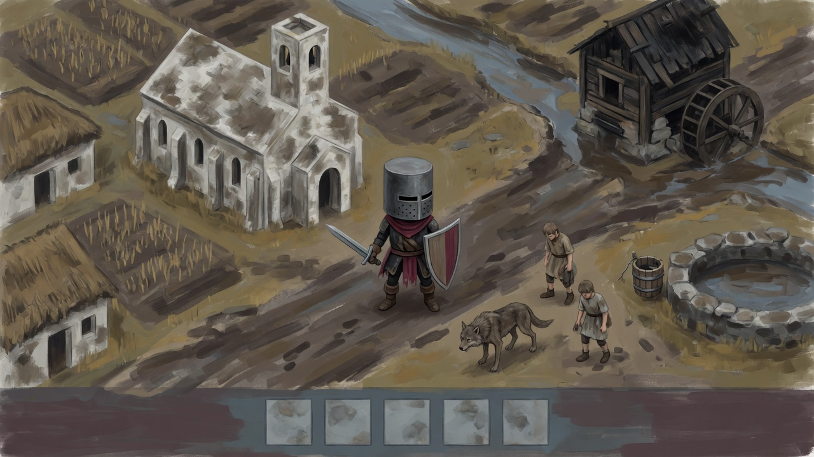

1 · S49 — Painted wash


Painted wash
Broad dirty brush strokes and uneven washed color extend the S49 painting preference across the village. The closed cylindrical helmet and single player are retained.
The player is larger and more upright than the brief; helmet lighting still suggests volume, and the paper-brush look is lighter than the darkest mood references.